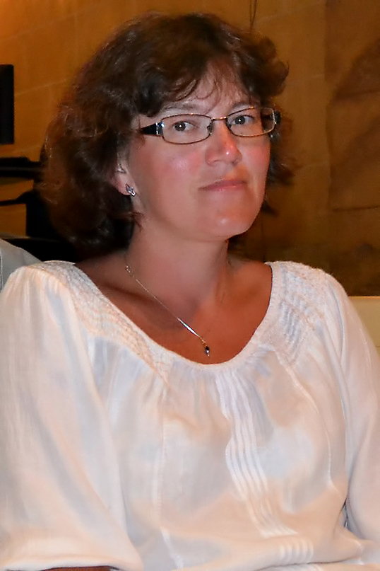

Разрешите представиться: Богданова Наталья Сергеевна, педагог-психолог ПМАОУ «СОШ №7».
Родилась в Первоуральске, если
спрашивают «Когда?», отвечаю «В прошлом тысячелетии» и горжусь уникальностью
происходящего: не всем так повезло. Началом
педагогической деятельности всерьёз считаю первый класс школы, когда дома рассаживала всех
кукол за «парты» и учила
тому, что сама услышала на уроке — это был способ выполнить домашнее задание. С годами
поняла, чего хочу от будущей
профессии: она должна быть не как у всех. И наперекор родителям, мечтавшим о моей карьере
юриста или врача, поступила в
Институт специального образования УрГПУ. Мама и папа долго ворчали на слишком
самостоятельную дочь, предрекая
невостребованность подобных специалистов. Но я была полностью уверена в своём выборе.
Теперь понимаю — не ошиблась.
Родители сначала смирились, затем успокоились, а потом стали тихо возмущаться, что слишком
много работаю. Однако
надеюсь, что они мной всё-таки гордятся. За годы работы была дефектологом, а затем
руководителем ГПМПК,
учителем-логопедом, тренером по шахматам, педагогом-психологом, учителем начальных
классов. Самое главное, что я поняла,
работая с детьми — всё познаётся в сравнении. Никогда не говорите, что ребёнок «хуже
некуда». Большинство из нас
работают с детьми умными, способными и интересными. Просто нужно чуть-чуть повнимательней
приглядеться.
Образование:Высшее; УрГПУ - «Олигофренопедагогика и
логопедия»
Профессиональная
переподготовка:АНО ДПО «МОГУ» - «Психология», 526
ч.,АНО ДПО «МИРО» - «Тьюторское сопровождение в образовательной организации»,
1008 ч.
Стаж педагогической
деятельности:23 года.
- СИПР
- Психологическая азбука
- Нормативная документация
- Программа коррекционной работы
- Адаптированные программы основного образования
- Адаптированные программы начального образования
- Развитие познавательной деятельности у учащихся с ЗПР
- Рабочая программа по коррекции фонематической дисграфии
- Рабочая программа по коррекции аграмматической дисграфии
- Комплексная программа профилактики ВИЧ-инфекции и употребления ПАВ